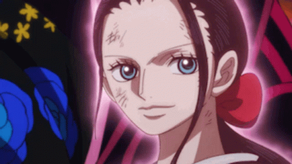

Who is Nico Robin?
Nico Robin is a prominent character in the anime and manga series One Piece. She is known as the "Devil Child" due to her ability to read and decipher the ancient Poneglyphs, which hold the secrets of the Void Century, a period erased from the world's memory. Robin's pursuit of these secrets has made her a target of the World Government, who see her knowledge as a threat to their power. Despite this, Robin has become an integral member of the Straw Hat Pirates, the group of main characters in One Piece.
Robin is a complex character with a difficult past. As a child, she was ostracized and feared by those around her due to her unique ability. She eventually joined a group of archaeologists, but they were betrayed and killed by the government. Robin was the only survivor and spent the rest of her childhood on the run, constantly hunted by the government. This traumatic experience has made her reserved and hesitant to trust others. However, as she joins the Straw Hat Pirates and spends more time with them, she begins to open up and form close bonds with her teammates.
Robin is a skilled fighter, using her Devil Fruit powers to create body parts from any surface she touches, allowing her to create extra arms or legs to attack her enemies. She is also a master of hand-to-hand combat and often uses her intelligence and knowledge of history to outsmart her opponents. Despite her reserved nature, Robin cares deeply for her teammates and will do anything to protect them. Her knowledge and fighting skills have been crucial to the group's success in their quest to find the One Piece, and her loyalty and caring nature make her a valuable member of the Straw Hat Pirates.